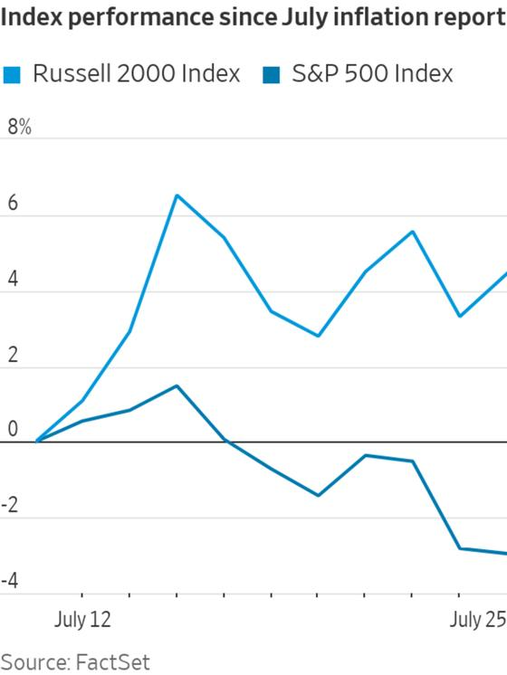
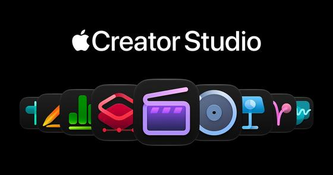
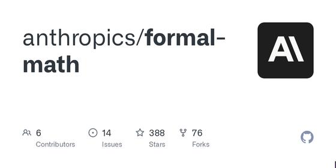
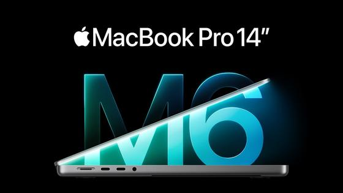
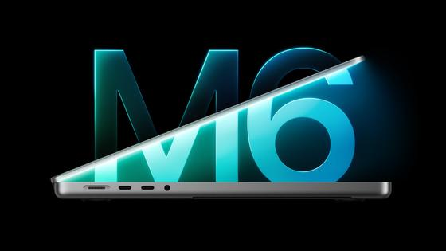
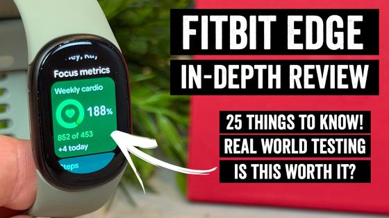
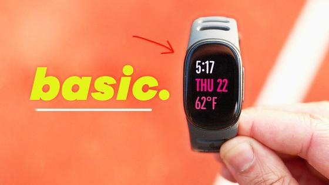

Executive Synthesis: Broadcom's $63B Anthropic debt facility and Anthropic's 85% gross margins headline massive AI infrastructure moves, alongside Apple's M6 launch, MCP in iWork, and Euclid dark universe data.
Don't Miss
| Wall Street Journal: | today · 5m |

Broadcom Arranges Landmark $63 Billion Debt Facility for Anthropic Compute Expansion — Broadcom, in partnership with Bank of America, Blackstone, Citi, and Morgan Stanley, finalized a $63 billion structured financing vehicle designed to underwrite hyperscale compute procurement for Anthropic. The deal represents the largest private debt transaction ever arranged for artificial intelligence datacenter capacity.
Takeaway: Monitors the debt mechanics, custom silicon scaling, and capital demands underpinning major frontier lab compute.
| The Information: | today · 5m |
Takeaway: Provides essential financial benchmarking for API inference margins and frontier lab commercial sustainability.
| Wall Street Journal: | today · 4m |
Nvidia and Meta Expand AI Partnership: Vera Rubin Deployment and $3B Investment
—
Nvidia and Meta announced an expanded collaboration centered on the Muse family of models and large-scale hardware deployment. Meta plans broader rollouts of Nvidia's next-generation Vera Rubin GPUs and Vera standalone CPUs. Concurrently, Nvidia plans to invest $3 billion into Meta's pending equity fundraise to finance ongoing datacenter buildouts.
Takeaway: Directly tracks hardware procurement, semiconductor capital expenditure, and foundational model partnerships on your radar.
| Google DeepMind: | today · 4m |
Google DeepMind Launches Genie 4: Real-Time Interactive World Simulation Model
—
Google DeepMind unveiled Genie 4, a frontier world model powered by Gemini 3.8 Flash that synthesizes navigable 3D interactive environments in real time. Genie 4 accepts text, image, and action steering to simulate consistent object physics, interactive characters, and accompanying procedural ambient soundscapes at low latency.
Takeaway: Tracks major paradigm advances in generative simulation and physical agent world-modeling.
| Apple Newsroom: | today · 4m |

Apple Adds Native Model Context Protocol (MCP) Support to Keynote, Pages, and Numbers — In an unexpected architectural shift, Apple announced that its iWork suite (Keynote, Pages, and Numbers) now implements native Model Context Protocol (MCP) server endpoints. This open integration allows external AI coding agents and local orchestrators to inspect document trees, programmatically edit slides, and parse spreadsheet tables directly.
Takeaway: Huge validation of the Model Context Protocol (MCP) by a major operating system vendor.
| OpenAI Research: | yesterday · 6m |
Takeaway: Groundbreaking demonstration of AI models solving decades-old open problems in theoretical computer science.
| Reuters: | today · 4m |
Takeaway: Critical geopolitical cybersecurity and satellite network surveillance revelation.
Industry Watch →
DeepMind launches the Genie 4 world simulation model, Apple natively implements MCP across iWork, and OpenAI presents major algorithmic and quantum discoveries.
| OpenAI Research: | yesterday · 6m |
Takeaway: Groundbreaking demonstration of AI models solving decades-old open problems in theoretical computer science.
| GitHub / Formal Math: | today · 5m |

A 2^o(n) Time Algorithm for 3-SAT: Formal Lean Verification Repository — A public repository demonstrating machine-checked Lean formal proofs verifying sub-exponential algorithms for bounded 3-SAT problem instances, challenging classical hardness assumptions.
Takeaway: Formal verification and mechanized math proofs applied to computational complexity.
| Rest of World: | yesterday · 4m |
Study: Non-English Languages Face Heavy Tokenizer Overhead and Cost Penalties in Frontier LLMs
—
Empirical analysis across Indic, East Asian, and African languages shows that standard byte-pair encoding (BPE) tokenizers require 3x to 8x more tokens per semantic sentence than English, inflating inference latency and API costs significantly for multilingual users.
Takeaway: Deep insight into tokenization architecture, Indic language efficiency, and model equity.
| Google DeepMind: | today · 4m |
Google DeepMind Launches Genie 4: Real-Time Interactive World Simulation Model
—
Google DeepMind unveiled Genie 4, a frontier world model powered by Gemini 3.8 Flash that synthesizes navigable 3D interactive environments in real time. Genie 4 accepts text, image, and action steering to simulate consistent object physics, interactive characters, and accompanying procedural ambient soundscapes at low latency.
Takeaway: Tracks major paradigm advances in generative simulation and physical agent world-modeling.
| Apple Newsroom: | today · 4m |
Apple Adds Native Model Context Protocol (MCP) Support to Keynote, Pages, and Numbers
—
In an unexpected architectural shift, Apple announced that its iWork suite (Keynote, Pages, and Numbers) now implements native Model Context Protocol (MCP) server endpoints. This open integration allows external AI coding agents and local orchestrators to inspect document trees, programmatically edit slides, and parse spreadsheet tables directly.
Takeaway: Huge validation of the Model Context Protocol (MCP) by a major operating system vendor.
| CNBC: | today · 3m |
Oracle Integrates ChatGPT and Codex into OCI Stack and Expands AI Hardware Accelerators
—
Oracle announced deep integration of OpenAI's Codex coding tools across Oracle Cloud Infrastructure application stacks. Furthermore, Oracle Cloud expanded its compute instances to host Google TPUs alongside specialized Cerebras wafer-scale engines, broadening hardware diversity for enterprise model fine-tuning.
Takeaway: Follows enterprise adoption of coding assistants and multi-cloud AI hardware infrastructure.
| Bloomberg: | today · 4m |
Takeaway: Tracks sovereign hardware supply chain manufacturing and defense computing initiatives.
| Bloomberg: | today · 3m |
Takeaway: Signals institutional capital depth sustaining late-stage AI infrastructure valuations.
| GeekWire: | today · 3m |
Takeaway: Practical example of vertical conversational agents automating complex corporate workflows.
| TechCrunch: | today · 4m |
TechCrunch: Apple Unveils New 14-Inch MacBook Pro with M6 Chip Architecture
—
TechCrunch's breakdown of the 14-inch MacBook Pro powered by the M6 chip, detailing memory configurations, unified bandwidth, and hardware optimizations for local machine learning models.
Takeaway: Detailed independent hardware analysis of Apple's flagship workstation.
| The Verge: | today · 4m |
The Verge: Apple Updates the MacBook Pro with M6 Chips and Expanded Memory
—
The Verge reviews Apple's launch of the M6 MacBook Pro and iMac, highlighting Wi-Fi 7 integration, battery life testing, and thermal headroom in sustained developer workloads.
Takeaway: Independent hands-on impressions of the M6 platform.
Markets and Money →
| Wall Street Journal: | today · 4m |
Nvidia and Meta Expand AI Partnership: Vera Rubin Deployment and $3B Investment
—
Nvidia and Meta announced an expanded collaboration centered on the Muse family of models and large-scale hardware deployment. Meta plans broader rollouts of Nvidia's next-generation Vera Rubin GPUs and Vera standalone CPUs. Concurrently, Nvidia plans to invest $3 billion into Meta's pending equity fundraise to finance ongoing datacenter buildouts.
Takeaway: Directly tracks hardware procurement, semiconductor capital expenditure, and foundational model partnerships on your radar.
| Wall Street Journal: | today · 5m |
Broadcom Arranges Landmark $63 Billion Debt Facility for Anthropic Compute Expansion
—
Broadcom, in partnership with Bank of America, Blackstone, Citi, and Morgan Stanley, finalized a $63 billion structured financing vehicle designed to underwrite hyperscale compute procurement for Anthropic. The deal represents the largest private debt transaction ever arranged for artificial intelligence datacenter capacity.
Takeaway: Monitors the debt mechanics, custom silicon scaling, and capital demands underpinning major frontier lab compute.
| The Information: | today · 5m |
Takeaway: Provides essential financial benchmarking for API inference margins and frontier lab commercial sustainability.
| Moneycontrol: | today · 3m |
Takeaway: Tracks high-end hardware consumer pricing and commercial launches in the Indian tech market.
| Investor's Business Daily: | today · 3m |
Investor's Business Daily: Nvidia and AMD Rise on Meta Muse Infrastructure Agreements
—
Semiconductor equities rallied following Meta's multi-billion dollar commitment to Nvidia Vera Rubin racks and AMD instinct clusters, affirming continued multi-year capital expenditure from leading hyperscalers.
Takeaway: Key equity catalyst tracking semiconductor leadership across institutional portfolios.
| CNBC: | today · 3m |
CNBC: Nvidia and Meta Expand Collaboration as Hyperscaler Earnings Commence
—
The most pivotal week of third-quarter corporate earnings is underway, with Alphabet and Microsoft reporting on Tuesday, followed by Meta on Wednesday and Apple on Thursday. Wall Street focus remains intently centered on generative AI cloud revenue run-rates, datacenter depreciation, and 2027 capital guidance.
Takeaway: Defines the financial trajectory and enterprise spend validation for hyperscaler cloud infrastructure.
| NBC News: | yesterday · 4m |
NBC News: Grand Theft AI: Highway Thieves Steal $100M+ in Data Center Gear Since June
—
Since June, sophisticated theft rings have stolen over $100 million in datacenter components and GPU server racks in transit, prompting freight logistics insurers to mandate armed escorts and GPS obfuscation counters.
Takeaway: Eye-opening supply chain and infrastructure security development affecting AI hardware deliveries.
| Apple Official: | today · 1m |

Apple on YouTube: The New 14-inch MacBook Pro with M6 Official Launch — Apple's official product introduction for the M6 MacBook Pro, demonstrating memory bandwidth improvements, hardware-accelerated ray tracing, and local model inference benchmarks.
Takeaway: Official architectural walkthrough of Apple's newest workstation silicon.
| Apple Official: | today · 1m |
Apple on YouTube: The New 24-inch iMac with M6
—
Apple's launch video detailing M6 desktop integration, color finishes, and N1 wireless connectivity.
Takeaway: Hardware overview of the M6 desktop platform.
Latest Radar
Wall Street Journal:
today · Markets and Money
Wall Street Journal:
today · Markets and Money
Moneycontrol:
today · Markets and Money
Investor's Business Daily:
today · Markets and Money
CNBC:
today · Markets and Money
NBC News:
yesterday · Markets and Money
Apple Official:
today · Markets and Money
Nutrients / PMC:
yesterday · Keto Kitchen
Nutrition Research:
2 days ago · Keto Kitchen
Vismai Food Official:
today · Keto Kitchen
OpenAI Research:
yesterday · Industry Watch
GitHub / Formal Math:
today · Industry Watch
Google DeepMind:
today · Industry Watch
Apple Newsroom:
today · Industry Watch
Bloomberg:
today · Industry Watch
Bloomberg:
today · Industry Watch
TechCrunch:
today · Industry Watch
The Verge:
today · Industry Watch
Tom's Hardware:
today · Deep Dive of the Day
MacRumors:
today · Deep Dive of the Day
European Space Agency:
today · Cosmos and Life
9to5Mac:
today · Cosmos and Life
T3:
today · Cosmos and Life
Cult of Mac:
today · Cosmos and Life
Reuters:
today · World and India
Bloomberg:
today · World and India
Bloomberg:
today · World and India
Reuters:
today · World and India
BWF World Tour:
today · Sports
Formula 1:
today · Sports
Formula 1 Official:
today · Sports
Sakshi Post:
today · Movies and Music
Spotify India:
today · Movies and Music
Burning Shed:
today · Movies and Music
Variety:
today · Movies and Music
Cinema Express:
today · Movies and Music
AllEvents San Jose:
today · Movies and Music
RogerEbert.com:
today · Movies and Music
Anime News Network:
today · Movies and Music
Sithara Entertainments:
today · Movies and Music
Santa Clara County Parks:
today · Local and Travel
National Park Service:
today · Local and Travel
DC Rainmaker:
yesterday · Local and Travel
CNET:
yesterday · Local and Travel
Cosmos and Life →
| European Space Agency: | today · 4m |
Takeaway: Directly supports today's deep dive on cosmic expansion and dark energy observation.
| CNET: | today · 4m |

CNET: Apple Brings M6 Updates to MacBook Pro and iMac Lines — CNET examines performance per watt metrics on Apple's 2nm M6 chip, evaluating CPU multicore scaling and unified memory bandwidth under heavy parallel data compilation.
Takeaway: Performance metrics on cutting-edge workstation architecture.
| 9to5Mac: | today · 3m |
9to5Mac: Watch the Official Launch Ad for Apple's New 14-inch MacBook Pro with M6
—
9to5Mac recaps Apple's promotional campaign for the M6 MacBook Pro, focusing on display glass enhancements, Wi-Fi 7 speeds, and extended battery endurance.
Takeaway: Visual and promotional overview of Apple's flagship laptop refresh.
| T3: | today · 3m |
T3: MacBook Pro 14-inch Gets the M6 Treatment to Deliver Next-Level Performance
—
T3 provides an early appraisal of the M6 MacBook Pro, praising its sleek form factor, vibrant Liquid Retina XDR display, and battery longevity under creative workloads.
Takeaway: Tech lifestyle appraisal of the new M6 MacBook Pro.
| Cult of Mac: | today · 3m |
Cult of Mac: M6 MacBook Pro Brings Jump in Performance with No Price Hike
—
Cult of Mac analyzes Apple's pricing strategy, noting that the M6 MacBook Pro preserves its $1,999 entry point while offering double the baseline unified memory bandwidth.
Takeaway: Clear value and specification comparison for Mac users.
World and India →
| Reuters: | today · 4m |
Takeaway: Critical geopolitical cybersecurity and satellite network surveillance revelation.
| Bloomberg: | today · 3m |
Takeaway: Hardware regulatory enforcement affecting consumer networking and Wi-Fi equipment.
| Livemint: | today · 3m |
 Livemint: India Infrastructure and National Development Wrap
—
Livemint details capital works progress in Andhra Pradesh and Telangana, focusing on multilateral loans for capital rebuilding and renewable industrial park power supply grids.
Livemint: India Infrastructure and National Development Wrap
—
Livemint details capital works progress in Andhra Pradesh and Telangana, focusing on multilateral loans for capital rebuilding and renewable industrial park power supply grids.
Takeaway: Reliable infrastructure and economic development tracking across India.
| Bloomberg: | today · 4m |
Takeaway: Major geopolitical legal milestone affecting cross-border technology export rules.
| Reuters: | today · 4m |
Takeaway: International market perspective on global AI hardware market dynamics.
Sports →
| BWF World Tour: | today · 3m |
Takeaway: Essential coverage of the premier BWF badminton tour you closely follow.
| Formula 1: | today · 4m |
Formula 1 Official: Mexico City Grand Prix Championship Standings and Race Recap
—
Ferrari's double-podium in Mexico slashed McLaren's lead in the World Constructors' Championship to just 29 points, setting up a thrilling three-way title duel with Red Bull heading into Brazil.
Takeaway: Formula 1 championship battle analysis and aerodynamic debrief.
| ESPNcricinfo: | today · 3m |
Takeaway: Core cricket coverage for Team India's home Test series.
| Formula 1 Official: | today · 8m |
 Formula 1 Official Portal: Race Weekend Video Center and Driver Interviews
—
Post-race technical debriefs, team radio compilations, and onboard camera angles from the Mexico City Grand Prix.
Formula 1 Official Portal: Race Weekend Video Center and Driver Interviews
—
Post-race technical debriefs, team radio compilations, and onboard camera angles from the Mexico City Grand Prix.
Takeaway: Rich technical video analysis from the official F1 media center.
Keto Kitchen →
Daily Protocol: 21.8g Net Carbs
3 recipes prepared today. Verified macro targets met.
Open Keto Kitchen Tab for Full Menu →Deep Dive: The Enduring Enigma of Cosmic Acceleration: Dark Energy, BAO, and the Hubble Tension →
How precision surveys from DESI, Euclid, and the Roman Space Telescope are testing whether dark energy is truly Einstein's constant or dynamic physics.
Read the full deep dive analysis →
Movies and Music →
| Sakshi Post: | today · 3m |
Takeaway: Latest verified developments from the heart of the Telugu film industry.
| Spotify India: | today · 2m |
Takeaway: Leading platform tracking current streaming numbers for Telugu music.
| Burning Shed: | today · 2m |
Takeaway: Primary release channel for Steven Wilson and progressive music.
| Variety: | today · 3m |
Variety: Film Festivals, Cinema Releases, and Awards Season Calendar
—
Variety previews the global box office weekend, examining major multi-language releases including festive Indian titles Lucky Baskhar and KA clashing against Hollywood specialty expansions.
Takeaway: Industry overview of festive cinema and box office performance.
| Cinema Express: | today · 3m |
Takeaway: Authoritative Telugu film industry news and release date updates.
| AllEvents San Jose: | today · 2m |
AllEvents San Jose: Festive Cultural Celebrations and Live Performances
—
Curated listing of festive weekend gatherings across San Jose, including cultural festivals, live regional music nights, and community celebrations in the South Bay.
Takeaway: Verified calendar of upcoming local festive cultural events near home.
| RogerEbert.com: | today · 4m |
Takeaway: In-depth film criticism focusing on thoughtful, prestige cinematic releases.
| Anime News Network: | today · 3m |
Takeaway: Authoritative reporting on top animated series and global release schedules.
| Sithara Entertainments: | today · 6m |
Sithara Entertainments Official Channel: Lucky Baskhar Videos and Teasers
—
The official media hub for Lucky Baskhar, offering behind-the-scenes interviews, trailers, and score previews ahead of its October 31 theatrical arrival.
Takeaway: Direct channel for videos from the makers of Lucky Baskhar.
Local and Travel →
| Santa Clara County Parks: | today · 2m |
Takeaway: Reliable local guide for weekend trail outings in Santa Clara County.
| National Park Service: | today · 3m |
National Park Service: Plan Your Visit to Point Reyes National Seashore
—
Current visitor guidance for Point Reyes, detailing autumn coastal conditions, wildlife viewings at Tomales Point, and trail safety along the ocean bluffs.
Takeaway: Official park visitor guide for a scenic coastal day trip north of the Bay.
| DC Rainmaker: | yesterday · 5m |

DC Rainmaker: Fitbit Edge In-Depth Review and Fitness Tracking Accuracy — DC Rainmaker released an in-depth review of the newly launched Fitbit Edge fitness tracker, praising its dual-frequency GPS accuracy and optical heart rate sensor responsiveness, alongside seasonal introductory trade-in deals.
Takeaway: Thorough, authoritative fitness hardware review and purchase analysis.
| CNET: | yesterday · 7m |
CNET on YouTube: Living With Fitbit Edge: Useful, but Something's Missing
—
CNET tests the new Fitbit Edge on morning runs and gym workouts, reviewing battery endurance, heart-rate tracking, and everyday wearability.
Takeaway: Practical hands-on hardware review for wearable fitness gear.
| 9to5Google: | yesterday · 10m |

9to5Google on YouTube: Fitbit Edge Review: 2 Weeks Later — Long-term impressions of the Fitbit Edge, focusing on Google integration, sleep tracking algorithms, and display legibility in bright sunlight.
Takeaway: Comprehensive wearable technology review.